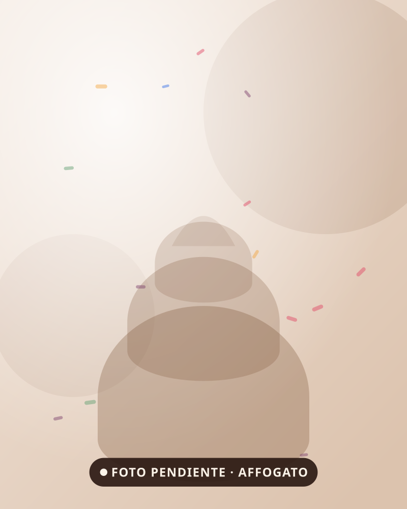

Sunday Funday · Nariño Sur, Bogotá
Nuestros cafés
Para la tarde bogotana, que casi siempre pide algo caliente. También hay té, aromática y café frío para los días en que sale el sol.


Se piden juntos
El café sabe mejor con algo al lado
Un brownie, una torta de almojábana o unas fresas con chocolate. Casi nadie se toma el café solo, y con razón.
Ya escogió
Ahora falta venir
Nos encuentra en Google Maps como Sunday Funday Cra. 7 Nariño Sur.
Las imágenes son marcadores: se reemplazan por fotografía real.